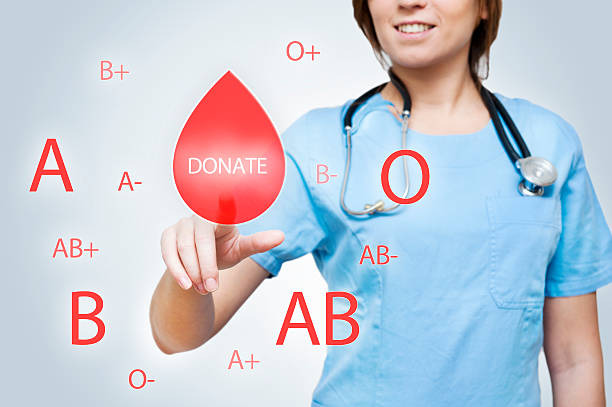
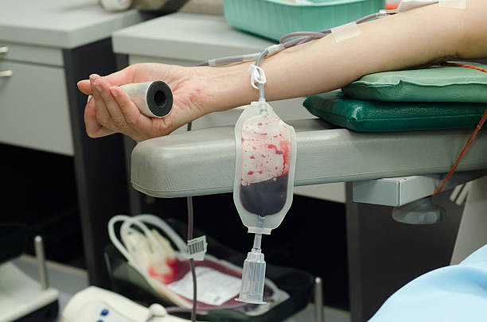
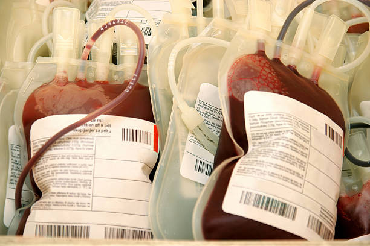
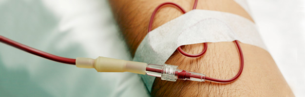

Saiba como se tornar um doador

CRITERIOS GERAIS
Alimentação

Para doar sangue o candidato deverá estar alimentado. Se for doar pela manhã, fazer uma
refeição leve, sem gorduras, como café, bolo, pão, cereais e frutas. Após almoço, jantar ou
refeições com conteúdo mais gorduroso deve-se aguardar três horas para efetuar a
doação. Após refeições gordurosas ou copiosas será necessário aguardar quatro horas.
Refeições com elevado índice de gordura, como a feijoada, podem interferir na execução
dos exames; assim, sugerimos que nesta situação a doação seja realizada no dia
seguinte. Lembre-se de ingerir líquidos em maior quantidade antes e depois de realizar a
doação.
Documentos
Para doar sangue é necessário apresentar um documento original e oficial de identidade
que contenha foto, filiação e assinatura: Carteira de Identidade, carteiras de Conselhos de
Classe reconhecidos oficialmente, Carteira de Trabalho, Certificado de Reservista, Carteira
Nacional de Habilitação.
Estado geral
O candidato à doação deve comparecer em condições plenas de saúde. Assim, se estiver
apresentando qualquer sintoma, mesmo que leve, deverá aguardar a melhora para então
procurar uma unidade de coleta. Lembrando que a doação é um gesto que permite salvar
vidas, mas que não deve e não pode prejudicar a saúde do doador.
Frequência cardíaca/pulso
Serão avaliados pelo médico. Devem ser regulares e estar entre 50 e 100 batimentos /
pulsação por minuto. Fora destes limites, apenas a critério médico.
Idade
Podem doar sangue pessoas entre 16 e 69 anos. Pessoas commais de 60 anos somente
poderão doar caso já tenham realizado uma doação antes dos 60 anos, independente do
sexo, e devem respeitar o intervalo mínimo de seis meses entre as doações.
Atenção, se o candidato à doação de sangue tementre 16 e 17 ou mais de 60 anos, é
importante conhecer asNormas e documentos necessários para doação de sangue.
Intervalo entre doações

Mulheres
Podem doar sangue com um intervalo de 90 dias entre uma doação de sangue total e
outra, até no máximo três vezes em um período de 12 meses.
Homens
Podem doar sangue com um intervalo de 60 dias entre uma doação de sangue total e
outra, até no máximo quatro vezes por ano.
Nutrição
O candidato a doador deve se encontrar em boas condições nutricionais, a fim de que seu
organismo possa responder adequada e prontamente à doação de sangue. O sangue
doado é rapidamente reposto, a partir das reservas de líquido, vitaminas e minerais do
corpo. Por isso, caso haja algum déficit proteicocalórico ou vitamínico, deve-se aguardar a
normalização do estado nutricional para doar sangue. Caso se observe uma perda rápida
de peso acima de 10% do peso inicial, é preciso aguardar três meses após a estabilização
para a doação de sangue, mesmo que não se tenha utilizado medicamentos. Se houver
perda de peso, sem que a pessoa tenha se submetido a dietas ou condicionamento físico,
recomenda-se procurar o médico para averiguar o motivo.
Peso
A doação de sangue é realizada considerando-se um volume máximo por quilo de peso.
Para mulheres, o volume máximo é de 8ml /kg e, para os homens, 9ml/kg. A coleta é
também proporcional ao volume de anticoagulante em cada bolsa de coleta, razão que
limita a coleta de volumes menores de sangue. Assim, na Fundação Hemominas coletam-
se bolsas de sangue de acordo com as seguintes condições:
• Homens acima de 50 Kg: 450ml
• Mulheres entre 50 e 55,9 Kg: 410ml
• Mulheres com 56 kg ou mais: 450ml
O peso será verificado no momento da doação e será descontado 1 kg referente ao
peso da roupa.
Pressão arterial
Será aferida no momento da doação. A pressão sistólica (máxima) não poderá exceder
180mmHg ou estar abaixo de 90mmHg; a pressão diastólica (mínima) não poderá exceder
100mmHg ou estar abaixo de 60mmHg. É oportuno lembrar que a pressão arterial pode
modificar-se rapidamente em resposta a exercícios físicos e ansiedade. Assim, não fazer
esforço vigoroso antes de doar e permanecer tranquilo antes e durante a entrevista evitará
que a doação não se efetive devido a uma alteração aguda da pressão arterial.
•Candidato portador de hipertensão arterial
Essas pessoas somente poderão doar sangue na Fundação Hemominas se estiverem em
uso de medicamento que não contraindique por si só a doação, apresentando níveis
pressóricos controlados e sem lesões em órgãos alvo (por exemplo, coração, rins, olhos).
Para avaliar tais condições, será necessário, portanto, que o candidato à doação
apresente relatório do seu médico assistente comprovando o controle clínico adequado.
No dia da doação, a pressão arterial será aferida e a doação apenas será realizada se a
máxima estiver abaixo de 140mmHg e a mínima abaixo de 90 mmHg.
Repouso

O candidato deve ter dormido, pelo menos, quatro horas. Idealmente, deve ter dormido
dentro do seu habitual, sentindo-se descansado no momento da doação.
Sintomas comuns que impedem a doação
• Febre (pico isolado) sem outros sintomas associados: aguardar sete dias após a melhora
do sintoma;
• Febre persistente de origem indeterminada: aguardar diagnóstico ou, no mínimo, três
meses sem febre;
• Diarreia sem necessidade de uso de antibióticos: aguardar sete dias após a melhora dos
sintomas;
• Gripe ou resfriado: aguardar sete dias após a melhora dos sintomas. Se associada à
temperatura corporal igual ou superior a 38°C, aguardar 14 dias após a melhora dos
sintomas.
Temperatura
O doador deve estar sem febre. A temperatura será aferida no momento da triagem e não
poderá exceder 37° C.